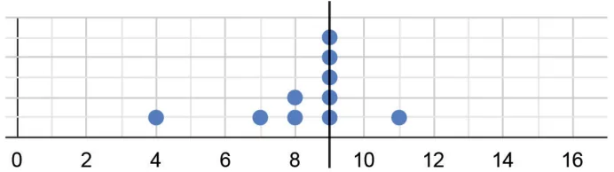
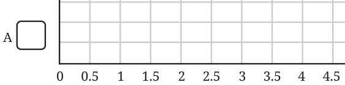
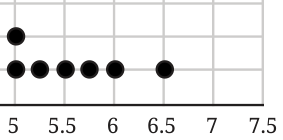
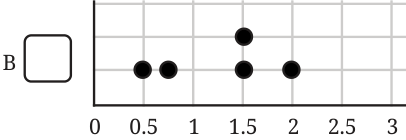
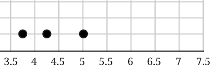
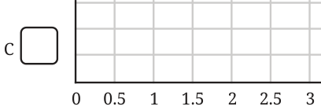
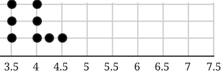
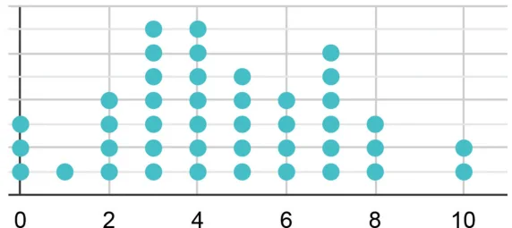

- 1.Find the mean of the following data and share your observations: Math Talk
- (i)The first 50 natural numbers.
- (ii)The first 50 odd numbers.
- (iii)The first 50 multiples of 4.
- 2.The dot plot below shows a collection of data and its average; but
one dot is missing. Mark the missing value so that the mean is 9 (as shown below).

- 3.Sudhakar, the class teacher, asks Shreyas to measure the heights of
all 24 students in his class and calculate the average height. Shreyas informs the teacher that the average height is 150.2 cm. Sudhakar discovers that the students were wearing uniform shoes when the measurements were taken and the shoes add 1 cm to the height.
- (i)Should the teacher get all the heights measured again without
the shoes to find the correct average height? Or is there a simpler way?
- (ii)What is the correct average height of the class?
- (a)174.2 cm (b) 126.2 cm (c) 150.2 cm
- (d)149.2 cm (e) 151.2 cm (f) None of the above
- (g)Insufficient information
- 4.The three dot plots below show the lengths, in minutes, of songs of
different albums. Which of these has a mean of 5.57 minutes? Explain how you arrived at the answer.






- 5.Find the median of 8, 10, 19, 23, 26, 34, 40, 41, 41, 48, 51, 55, 70,
84, 91, 92.
- (i)If we include one value to the data (in the given list) without
affecting the median, what could that value be?
- (ii)If we include two values to the data without affecting the
median what could the two values be?
- (iii)If we remove one value from the data without affecting the
median what could the value be?

- 6.Examine the statements below and justify if the statement is always
true, sometimes true, or never true.
- (i)Removing a value less than the median will decrease the
median.
- (ii)Including a value less than the mean will decrease the mean.
- (iii)Including any 4 values will not affect the median.
- (iv)Including 4 values less than the median will increase the
median.
- 7.The mean of the numbers 8, 13, 10, 4, 5, 20, y, 10 is 10.375. Find the
value of y.
- 8.The mean of a set of data with 15 values is 134. Find the sum of the
data.
- 9.Consider the data: 12, 47, 8, 73, 18, 35, 39, 8, 29, 25, p. Which of the
following number(s) could be p if the median of this data is 29?
- (i)10 (ii) 25 (iii) 40 (iv) 100
- (v)29 (vi) 47 (vii) 30
- 10.The number of times students rode their cycles in a week is shown
in the dot plot below. Four students rode their cycles twice in that week.

- (i)Find the average number of times students rode their cycles.
- (ii)Find the median number of times students rode their cycles.
- (iii)Which of the following statements are valid? Why?
- (a)Everyone used their cycle at least once.
- (b)Almost everyone used their cycle a few times.
- (c)There are some students who cycled more than once on
some days.
- (d)Exactly 5 students have used their cycles more than once on
some days.

- (e)The following week, if all of them cycled 1 more time than
they did the previous week, what would be the average and median of the next week’s data?
- 11.A dart-throwing competition was organised in a
school. The number of throws participants took to hit the bull’s eye (the centre circle) is given in the table below. Describe the data using its minimum, maximum, mean and median.
No. of trials 1 2 3 4 5 6 7 8 9 10 No. of students 1 0 0 1 4 9 12 15 10 10